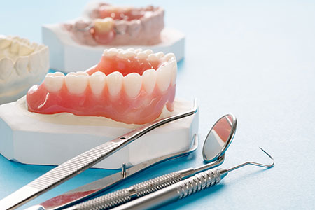
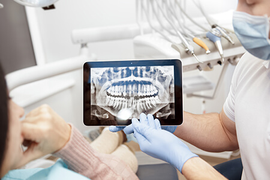

- TOP
- 入れ歯治療

失った歯の機能回復のために用いられる入れ歯治療は、歴史が長くポピュラーですが、「よく噛めない」「痛い」「外れやすい」などのイメージを持っている人もいるでしょう。しかし、自分の歯と比べてしまうと不満は消えなくとも、お口にぴったり合っていて、噛み合わせのバランスが整っていれば、わりと快適に使用できるはずです。
お口の中は変化しやすいので、定期的な入れ歯の調整は欠かせません。合わないまま使っていると、噛む力が偏り、過度の負担がかかって粘膜に炎症を起こすこともあるからです。大阪府高槻市の歯医者「河原歯科クリニック」では、保険診療でも自費診療でも、快適にお使いいただける入れ歯づくりを目指しておりますのでお気軽にご相談ください。
お口全体のこれからを見据えた入れ歯治療を

当クリニックが大切にしているのは、口腔内全体を診るとともに、長期的に健康を保てる治療プランです。これは虫歯や歯周病の治療だけでなく、入れ歯治療においても同じです。この先、お口の中がどう変化していくのかを予想しながら入れ歯を設計します。「バネをかける歯への負担をできるだけ小さくする」「残っている歯の寿命をできるだけのばす」「痛みが増しそうな形状から変更する」などを、お口の状態や入れ歯の構造を考えて設計します。さらに、「入れ歯が安定するために大切なレストシートの工夫」や「バネをかけている歯が使えなくなったときにも、すぐに調整・修理できるような設計」など、先を見据えているのです。その際にも、「入れ歯を使わないとお口の状態がどうなるのか」を分かりやすくお話し、お口の状態を悪化させないための設計なども丁寧にご説明します。
入れ歯治療が得意な歯科医師が在籍しています
当クリニックには、日本補綴（ほてつ）歯科学会認定の補綴専門医が在籍しています。補綴歯科とは、さまざまな理由で失った歯や歯の部位を、詰め物や被せ物、入れ歯やインプラントなどの人工物で補う診療分野です。
入れ歯はお口の粘膜にぴったり合うようにつくります。そのため、まず粘膜を健康な状態にしなければなりません。その状態に導いてはじめて、型取りができます。すでに入れ歯を使っている場合は、まずその入れ歯に触れるところから入れ歯作製がスタートします。これまで使ってきた入れ歯には、さまざまな情報が詰まっているからです。旧入れ歯から情報を得て、調整しながら新しい入れ歯をつくっていきます。
合わない入れ歯を使い続けていると、圧迫痕ができてしまうことがあります。その場合も、まず健康な粘膜に導く調整が必要です。旧入れ歯を調整して使っていただきながら、粘膜を滑らかな状態にするため、ある程度の時間がかかります。しかし、ぴったりの入れ歯を作製するために必要な工程です。丁寧なご説明でご理解いただき治療を進めていきますのでご安心ください。
入れ歯製作にはコミュニケーションが欠かせません
入れ歯は粘膜に密着させるものですが、その粘膜は経年とともに形状を変えます。そのため、ぴったり合っていて、噛み合わせが整った入れ歯をつくるには定期的な調整が必要です。何回も調整しながら、お口に合う入れ歯にしていくのです。その際には、どこが痛くて、どのくらい痛いかなどを、実際に患者様にうかがわなければなりません。細かい感覚の説明は簡単ではありませんので、さまざまなご質問を投げかけながらしっかりとお話をうかがい、時間がかかっても、大切なところを掘りさげていきます。お話を聞くことも治療の一環なのです。
初めて入れ歯を使う方や、以前つくった入れ歯が痛くて使えていなかった方など、患者様の状態や気持ちに寄り添った入れ歯の形態を選びます。入れ歯設計の際には、お口まわりだけでなく、生活や全身の疾患にも考慮しなければなりません。たとえば、リウマチがある人は手を動かしにくいので、取り外しをしやすいバネの設計にするなど、患者様の生活に寄り添ったご提案をいたします。
入れ歯の調整は必ず必要です
入れ歯は調整しながらお口に合わせていきます。そのため、快適に使える入れ歯をつくるのは、入れ歯をセットしたときがスタートともいえるかもしれません。お口の中の粘膜や歯周組織は変化しますので、定期検診も欠かせません。変化するお口の状態にその都度合わせないとならないからです。「つくったら終わり」ではなく、定期的な診察で調整しながら使いやすさを維持するのが入れ歯治療ですので、一緒に快適に噛める入れ歯を目指して調整していきましょう。
入れ歯治療で大切なこと
入れ歯をつくるときに大切なポイントは2つです。それは、正確な型取りとバランスの取れた噛み合わせです。お口にぴったり合っていなければ、「しっかり噛める入れ歯」はできませんし、わずかでも“ずれ”があると痛みが生じる原因となります。
正確な型取りには、舌や頬の筋や筋肉の動きまで考慮しなければなりません。また、噛み合わせのバランスを整えれば、外れにくい入れ歯をつくれます。当クリニックでは、この正確な型取りと噛み合わせのバランスに留意し、丁寧に入れ歯をつくっています。これは、保険の入れ歯でも自費の入れ歯でも同じです。
Pick UP 入れ歯を歯磨き粉で洗わないでください
入れ歯のお手入れは1日1回、入れ歯専用のブラシと入れ歯専用の洗剤で行ってください。歯磨き粉は研磨剤が入っているので、目には見えない細かな傷をつけてしまいます。この傷は細菌やカビの温床となるため、注意が必要です。
入れ歯専用ブラシで汚れを落としたら、洗浄剤に浸けましょう。お口に入れる前にはよくすすぎ、洗剤や洗浄剤をしっかり洗い流してから装着してください。
保険と自費の入れ歯の違い
※表は左右にスクロールして確認することができます。
|
保険診療の入れ歯 |
自費診療の入れ歯 |
|
|---|---|---|
| 素材 | レジン（歯科用プラスチック）でつくります。バネは金属製です。 | さまざまなものを選択できます。 |
| 特徴 |
|
|
| 費用 | 保険適用なので比較的安価 | 保険適用外なので比較的高額 |
レジン床義歯（保険診療）
レジン（歯科用プラスチック）が素材の入れ歯です。部分入れ歯の場合は、金属のバネ（クラスプ）がつきます。
| メリット | デメリット |
|
|---|---|---|
| デメリット |
|
|
金属床義歯（自費診療）
床部分が金属でできた入れ歯です。金属にはゴールド、チタン、コバルトクロムなどが使用されます。
| メリット | デメリット |
|
|---|---|---|
| デメリット |
|
|
ノンクラスプデンチャー（自費診療）
歯ぐきにあたる部分に弾力性のある樹脂素材を使う、バネ（クラスプ）のない入れ歯です。
| メリット | デメリット |
|
|---|---|---|
| デメリット |
|
|
インプラントオーバーデンチャー（自費診療）
顎の骨に埋め込んだ2～6本のインプラントを支えにして固定するタイプの入れ歯です。
| メリット | デメリット |
|
|---|---|---|
| デメリット |
|
|